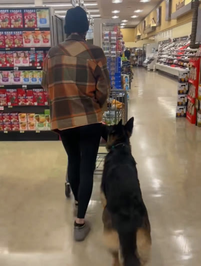

Nicole VanCleave
Nicole VanCleave is an ASCT Certified Instructor and psychiatric service dog trainer in Phoenix and Maricopa County, Arizona, and the founder of Daily K9 Academy. She trained her own PSD, Bruce, then built the one-on-one program that coaches other handlers through the same path.
Bruce

While I was still working a corporate job, I needed a psychiatric service dog and couldn't afford a placement. So I trained Bruce myself. He's the reason I can sit down and build a company.
Bruce is a German Shepherd, and nobody picked him for this. He wasn't bred for the work or chosen at eight weeks by someone who knew what to look for. He was rehomed to me — somebody else's dog who needed somewhere to go.
It took twelve to eighteen months to get from a dog who lived with me to a dog who worked for me. I learned that path by walking it wrong in places, which is the only reason I can shorten it for anyone else.
When that job ended, I came to see it as the most important door anyone ever closed for me — it freed me to do full time what I'd already been doing on my own: training dogs.
Credentials
I am certified by the ASCT — the American Society of Canine Trainers International — as a Certified Instructor, since 2023. I've been training dogs for seven years, professionally for the last three, and I founded Daily K9 Academy in 2025.
The pet dog training world is at war with itself about method. The service dog world is at war with itself about access. The methods war isn't my fight. The access gap is.
| Certification | Certified Instructor, American Society of Canine Trainers International (ASCT), 2023 |
|---|---|
| Specialty | Owner-trained psychiatric service dog teams |
| Experience | 7 years training · PSD handler since 2021 |
| Serves | Phoenix and Maricopa County, Arizona |
| Founded | Daily K9 Academy, 2025 |
Method
This is the work I love, so I never stop learning it — always training up, always sharpening what I bring my handlers. Underneath it all is one conviction: this work is relationship-based. A real working team is built on trust between handler and dog, not just the methods. Get the relationship right and the rest holds.
Who I work with
Most of my handlers are people who already have the right dog and don't know it yet. Bruce was a rehomed shepherd nobody selected for this work. The question is almost never whether the dog is perfect. It's whether the dog is sound, and whether you're willing to do the reps.
I take three to four service dog teams at a time, because the work doesn't compress. We train in your home and out where access actually gets tested — stores, lobbies, transit, waiting rooms — and I coach virtually between sessions, so the distance between us matters less than the drive suggests. I work across Maricopa County, and I'll travel for the right team.
I also train pet dogs, and I'm not precious about it. A solid pet obedience foundation is the same foundation a service dog stands on.
The full program, what it covers and what it costs, is laid out on the programs and pricing page. If you want the specifics of how psychiatric service dog work runs here, start with psychiatric service dog training in Phoenix.
— I built the program I needed.
Let's find out if this is a fit.
A free intake call, no pressure. Tell me about your dog and what you need them to do, and I'll tell you honestly whether owner-training is the right road.
Book a free intake call